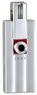

无忌
器材库
全部器材
产品年表
名词百科
榜单
器材库
> 不可换镜头数码相机 > i4R

康泰时
i4R
分类
不可换镜头数码相机
点评
0 条
图片
0 张
评测
0 篇
Contax i4R 采用400万有效像素CCD和等效焦距为39mm的定焦镜头，搭载1.5英寸液晶显示屏。
产品类型
不可换镜头数码相机
综合评分
暂无评分
无忌评测
暂无评测
规格参数
网友点评
(0)
产品图 / 样片
(0)
评测文章
(0)
规格总览
发布日期
2004-10-19
停产
是
影像规格
影像传感器
CCD
影像传感器尺寸
1/2.5英寸
总像素
419万
有效像素
400万
静态图像尺寸
2272×1704
静态图像格式
JPEG
画幅比
4:3
镜头和对焦
焦距
6.5mm
等效35mm画幅焦距
39mm
最大光圈
f/2.8
光学变焦
1.0倍
最近对焦距离
广角60cm, 微距5.0cm
对焦模式
9点AF
曝光控制
测光模式
中央重点测光, 多分区评价测光, 点测光
曝光模式
P（程序自动曝光）
快门速度
1-1/2000s
曝光补偿
±2EV以1/3EV级调整
ISO感光度
50, 100, 200, 400, 自动
白平衡
自动, 预设白平衡
自拍
10秒, 2秒
连拍
3 fps
闪光灯
内置闪光灯
固定
闪光模式
自动, 慢速同步, 减轻/消除红眼, 强制闪光, 禁止闪光
取景规格
取景器
电子取景器
LCD类型
彩色TFT LCD
LCD尺寸
1.5英寸
LCD像素
13万
文件输入/输出
存储卡
SD/SDHC, MMC
数据接口
USB
视频/音频接口
AV 输出
电源
电池
锂离子电池
外观
颜色
银色, 黑色, 红色
尺寸
90×38.5×21mm
重量
90g
该产品暂无存档的网友点评
该产品暂无存档的产品图
评测 / 相关文章
该产品暂无存档的评测文章
相关文章
［资讯］Contax i4R
（原站已下线）